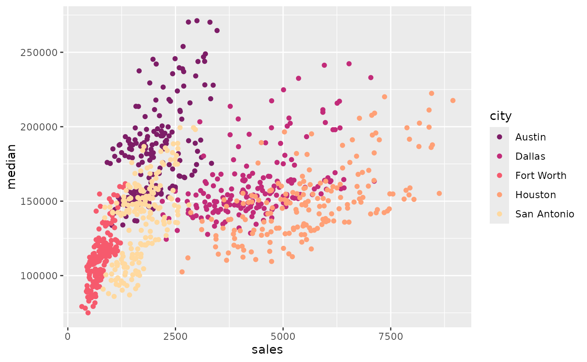
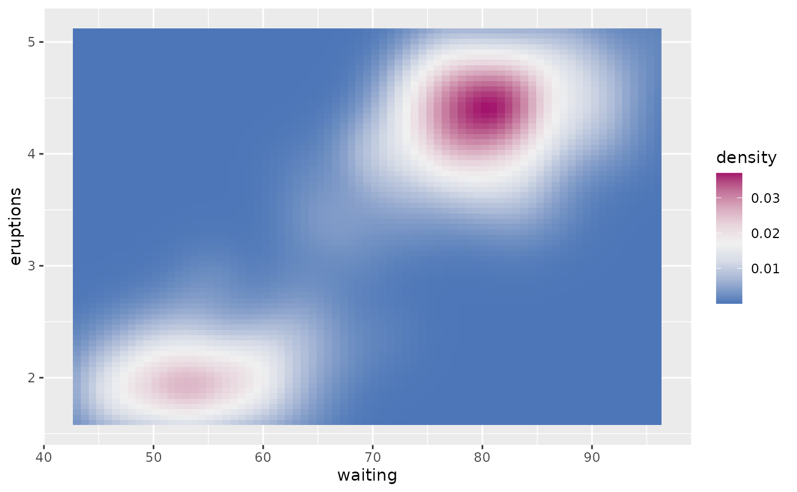
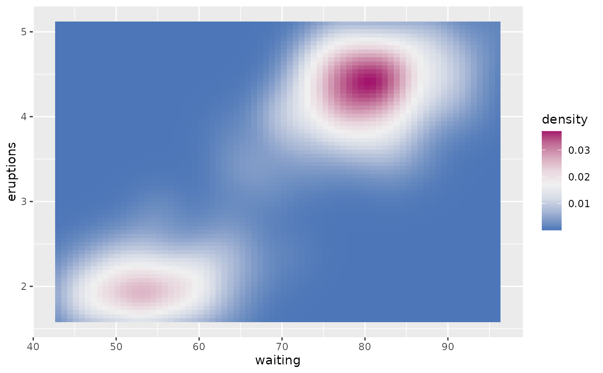
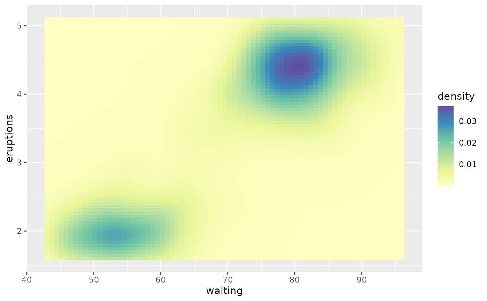
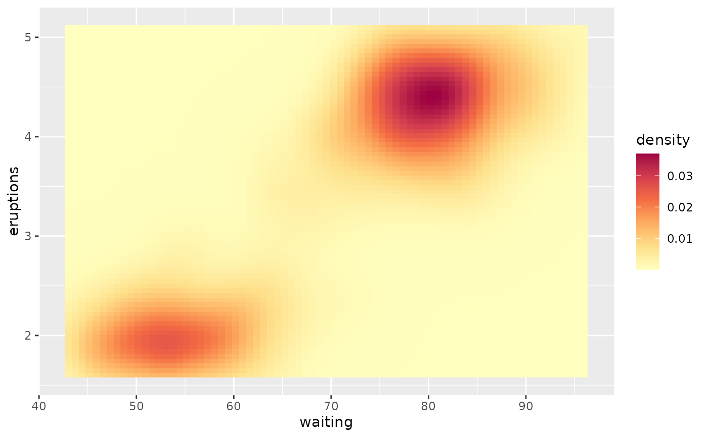
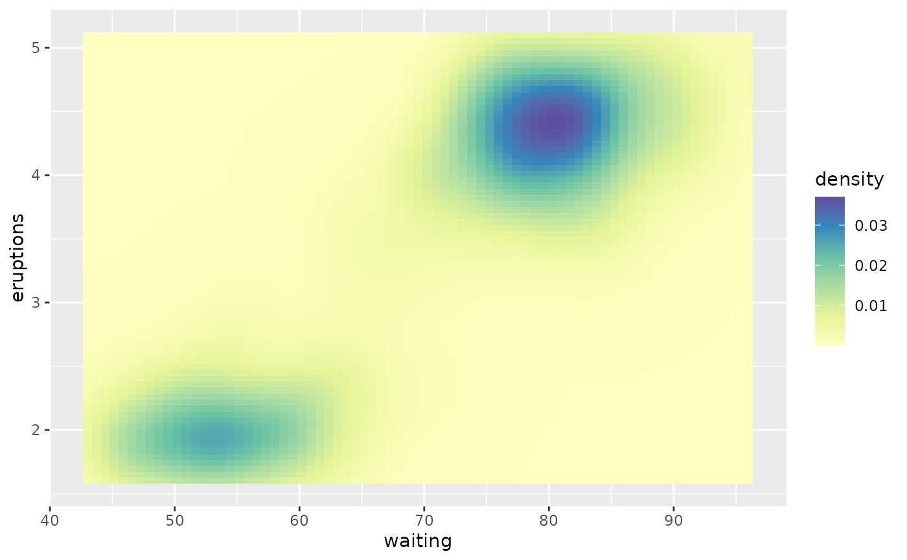
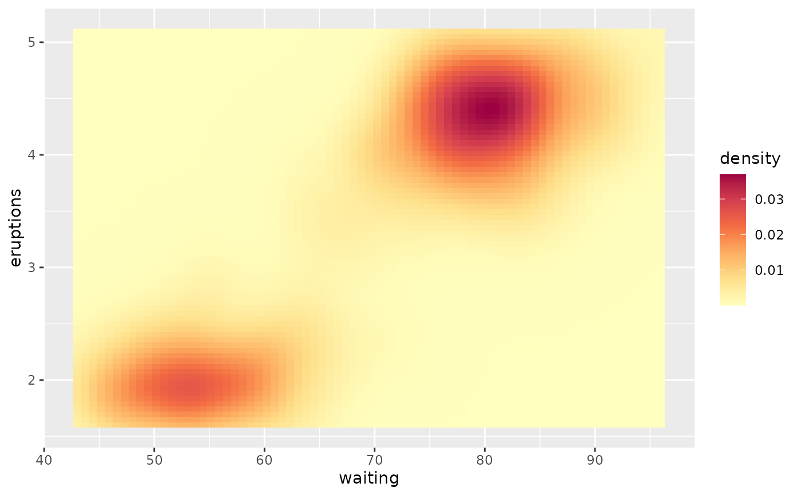

Color Scales for ggplot2 Graphics based on Color Themes
Source:R/color_theme.R
scale_color_theme.Rdscale_color_theme() and family functions returns color scales for the "colour" and "fill" aesthetics of ggplot objects.
Usage
scale_color_theme(
theme,
...,
discrete = NULL,
middle = 0,
aesthetics = "colour"
)
scale_colour_theme(
theme,
...,
discrete = NULL,
middle = 0,
aesthetics = "colour"
)
scale_fill_theme(theme, ..., discrete = NULL, middle = 0, aesthetics = "fill")Arguments
- theme
one of the following: a color theme name such as "Viridis", a character vector of color names, a palette function, or a ramp function to be used to create a color theme.
- ...
optional arguments to be passed to
ggplot2::continuous_scale()orggplot2::discrete_scale().- discrete
logical. If
TRUE, a discrete scale is returned.- middle
a numeric value specifying the middle point for the diverging color themes.
- aesthetics
character string: "fill" or "color".
Value
scale_color_theme() returns a "ScaleContinuous" or "ScaleDiscrete" object that can be added to a "ggplot" object.
Examples
data(txhousing, package = "ggplot2")
cities <- c("Houston", "Fort Worth", "San Antonio", "Dallas", "Austin")
df <- subset(txhousing, city %in% cities)
d <- ggplot2::ggplot(data = df, ggplot2::aes(x = sales, y = median)) +
ggplot2::geom_point(ggplot2::aes(colour = city))
d + scale_color_theme("Set 1")
d + scale_color_theme("R3")

d + scale_color_theme("Blues", discrete = TRUE)
 d + scale_color_theme("SunsetDark", discrete = TRUE)

data(faithfuld, package = "ggplot2")
v <- ggplot2::ggplot(faithfuld) +
ggplot2::geom_tile(ggplot2::aes(waiting, eruptions, fill = density))
v + scale_fill_theme("Plasma")
d + scale_color_theme("SunsetDark", discrete = TRUE)

data(faithfuld, package = "ggplot2")
v <- ggplot2::ggplot(faithfuld) +
ggplot2::geom_tile(ggplot2::aes(waiting, eruptions, fill = density))
v + scale_fill_theme("Plasma")
 v + scale_fill_theme("Spectral")

v + scale_fill_theme("Spectral_r")

v + scale_fill_theme("midr", middle = 0.017)
v + scale_fill_theme("Spectral")

v + scale_fill_theme("Spectral_r")

v + scale_fill_theme("midr", middle = 0.017)